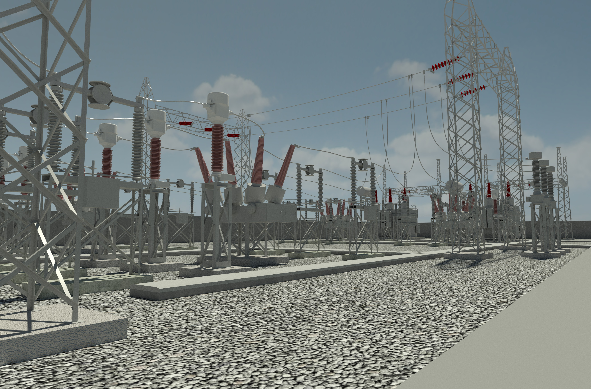
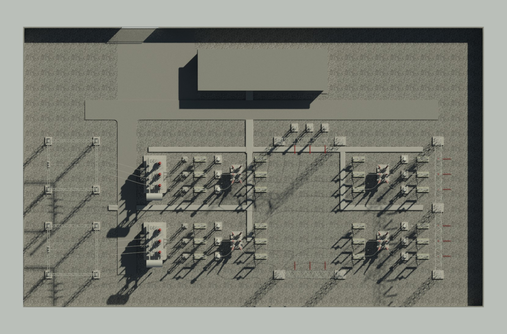
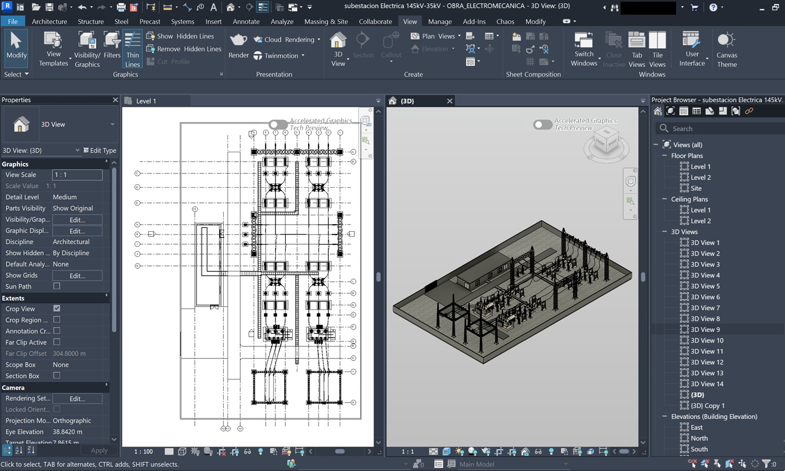
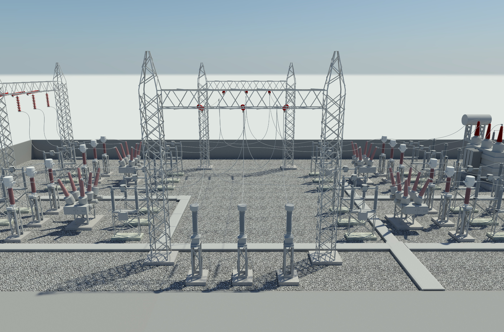
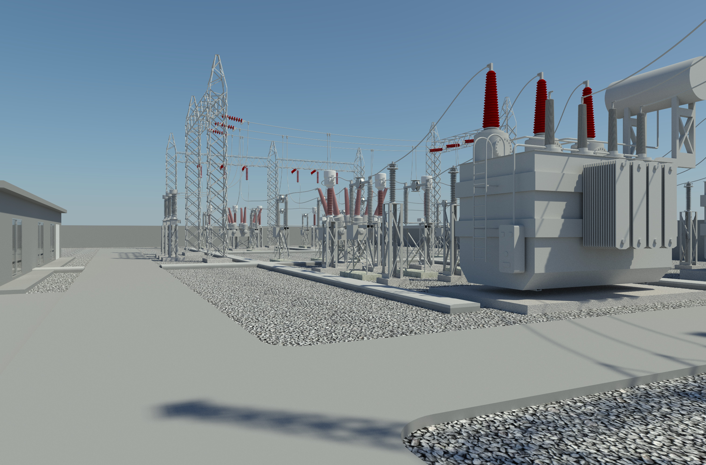
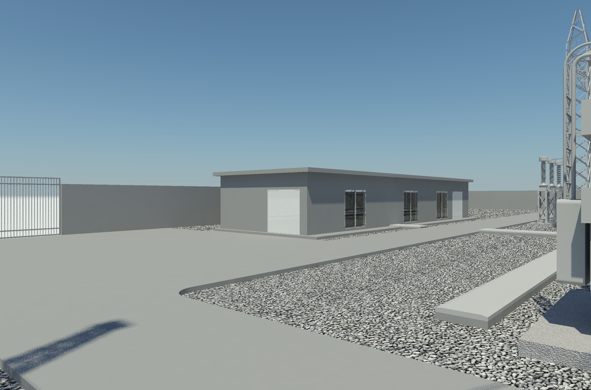
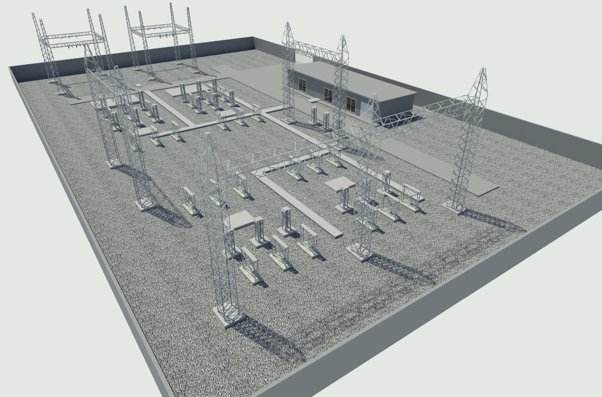
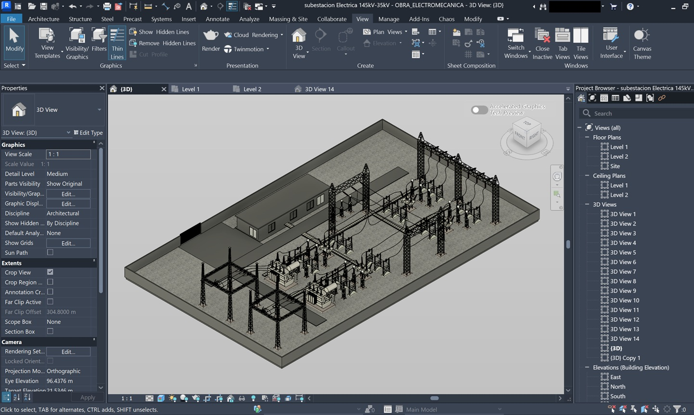
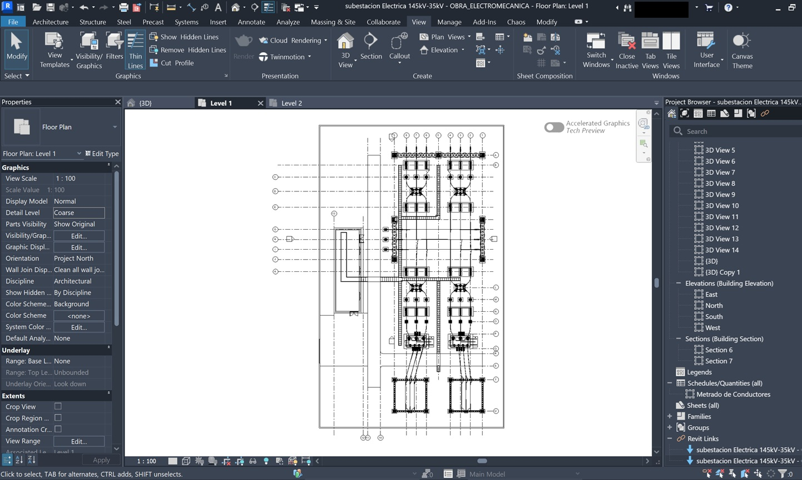

Modelado en Revit
Desarrollo del modelo tridimensional de la subestación utilizando Autodesk Revit.
Ingeniería eléctrica · Autodesk Revit · Metodología BIM
Desarrollo de un modelo tridimensional en Autodesk Revit para representar los principales equipos, estructuras e instalaciones de una subestación eléctrica.
01 · El proyecto
Las subestaciones eléctricas incluyen equipos y estructuras que deben ubicarse y relacionarse correctamente dentro de una instalación. El modelado tridimensional facilita la comprensión espacial del proyecto.
En este trabajo se utilizó Autodesk Revit para representar una subestación de 132 kV y organizar sus principales componentes dentro de un modelo BIM.
02 · Objetivo
El objetivo fue modelar en Revit los principales elementos de una subestación eléctrica de 132 kV, logrando una representación tridimensional clara de su configuración general.
03 · Mi participación
Desarrollo del modelo tridimensional de la subestación utilizando Autodesk Revit.
Incorporación y ajuste de los principales equipos eléctricos representados en el modelo.
Modelado de estructuras y elementos necesarios para representar la configuración general de la instalación.
Organización de vistas, elementos y familias para mantener una estructura de trabajo clara dentro de Revit.
04 · Desarrollo del modelo
Vistas generales, detalles y documentación obtenidos a partir del modelo desarrollado en Autodesk Revit.









05 · Flujo de trabajo
Análisis de la información y referencias disponibles para comprender la configuración de la instalación.
Configuración inicial del archivo, niveles, vistas y organización general del proyecto.
Desarrollo progresivo de equipos, estructuras y demás elementos incluidos en el alcance.
Comprobación de la ubicación, orientación y relación entre los principales componentes modelados.
06 · Herramientas
Modelado tridimensional y organización del modelo BIM.
Consulta de información gráfica y documentación de referencia.
Organización digital de los elementos y de la información del modelo.
07 · Resultado
Visualización tridimensional de la instalación y de sus principales componentes.
Lectura más clara de la ubicación y relación entre equipos y estructuras.
Estructuración de los elementos dentro de un entorno BIM.
Modelo preparado para continuar incorporando información cuando sea necesario.